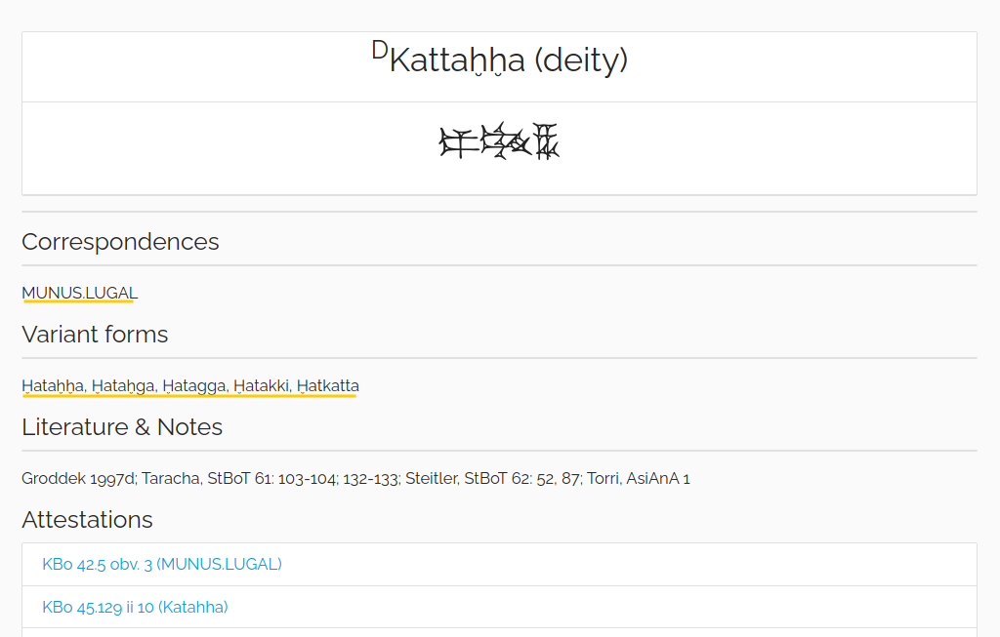
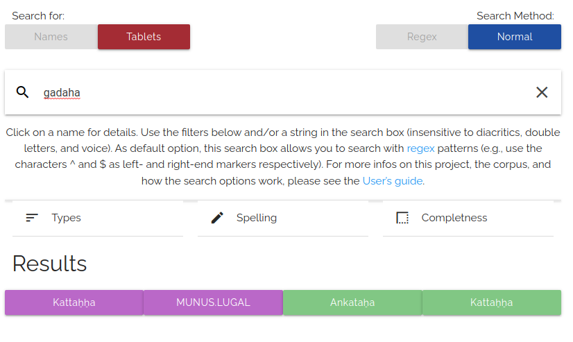
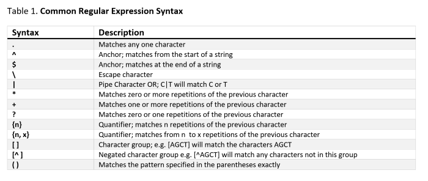
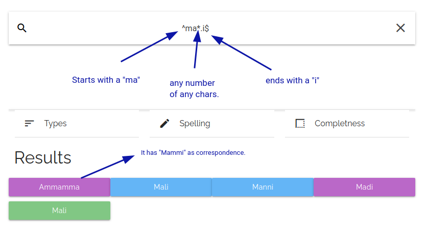
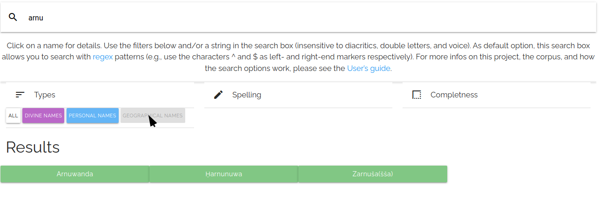
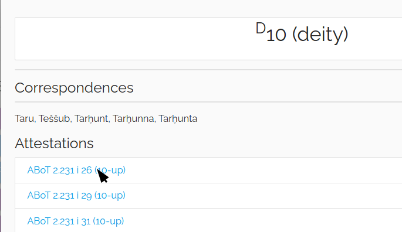
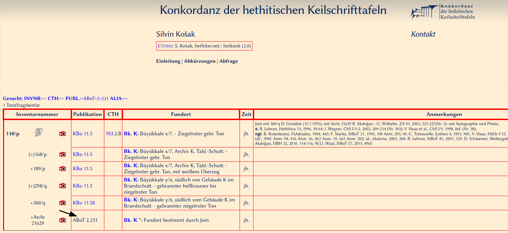
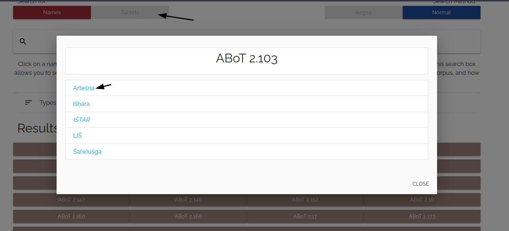
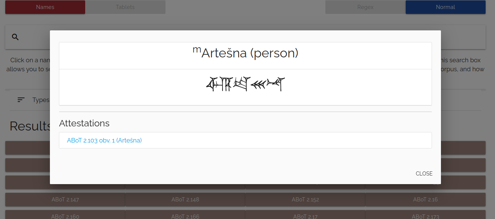

About the project
The Hittite Name Finder is a tool aiming to facilitate the retrieval of, and research on, names in Hittite texts. Originally conceived in the frame of the DFG-funded project “Critical edition, digital publication, and systematic analysis of the Hittite cult-inventories (CTH 501-530)”, a first version coded by Eileen Xing and Hartmut Oertel was released in 2020 at https://cuneiform.neocities.org/laman/finder.html. The present version is the result of a cooperation between M. Ali Akman (Bilkent University) and Michele Cammarosano (University of Naples ‘L’Orientale’) and combines the general list of names with the lists of occurrences of divine and personal names. The tool is conceived as a collaborative effort at the service of the research community: feedback, corrections, and additions are welcome and gratefully acknowledged.The corpus
The names, occurrences, and metadata are based on the LAMAN project. Basically, occurrences of divine and personal names consist of an update of the standard available repertoires, while the general list of names aims at completeness (not yet implemented, however, for personal names); occurrences of geographical names are not included, since they will be available in Adam Kryszeń’s repertoire Toponyme der Hethiter at HPM. The data pool is regularly expanded and updated: please refer to the LAMAN web page for detailed information on the texts that are taken into account, and on how attestations are collected and processed.How it works
Primary forms, variant forms, and correspondences
The core of the Hittite Name Finder consists of a list of names which can be filtered and searched, each one provided with a set of metadata. The name forms displayed in the grid items visible to the user correspond to normalized spellings of the attested names. When two or more forms are thought to represent variant forms of one name (e.g. Kattaḫḫa, Ḫataḫḫa, Ḫataḫga, Ḫatagga, Ḫatakki, Ḫatkatta), only one of them is displayed in the grid, while the other ones are booked as ‘variant forms’ within the popup window that can be opened by clicking on a name in the grid (variant forms, together with variant spellings and ‘correspondences’, are linked to the relevant primary name, see Search parameters). Note that the distinction of primary and variant forms is not yet implemented for personal names. Names which are treated separately within the grid but are thought to have been equated with each other at least in some contexts are cross-referenced as ‘correspondences’ in the popup windows (e.g., Kattaḫḫa and MUNUS.LUGAL).

Search parameters
Both ‘variant forms’ and ‘correspondences’ are linked to the relevant primary names and count as matches when performing a query: i.e., when searching after Ḫatkatta or MUNUS.LUGAL one finds (also) Kattaḫḫa in the search results. The search process is insensitive to diacritics, double letters, and voice (k/g, t/d, p/b). E.g., no matters whether one searches after “gadaha”, “kadaha”, “kataḫa”, “kaaaaadahhhaa” (etc), the name Kattaḫḫa will always be among the matches. NB: this applies to all searchable forms, with no distinction between Sumerograms, Akkadograms, and phonetically written Hittite. E.g., a search after “arat” will return (also) ARAD-D10 among the results.

Regular expressions
As default, the search box allows searching with regular expressions (e.g., the characters ^ and $ can be used as left- and right-end markers respectively: a query after “ili$” will return only names ending in -ili, and so on). Combining multiple regex patterns can be useful in evaluating possible restorations: e.g., in the case of a fragmentary name with a RA somewhere in the middle and a ḪA at the very end, one may want to search after “.*ra.*ha$” (“.” matches any single character, “*” matches the preceding element zero or more time). NB: since the period counts as a regular expression, it must be omitted when searching for composite Sumerograms, otherwise the returned matches will not meet the query’s intention: e.g., a query after A.AB will not return A.AB.BA.


Filters
Apart from using the search box, the names can be sorted out by using the filters corresponding to the categories “Type”, “Spelling”, and “Completeness”. The spelling of a name is classified as “logographic” when it consists of, or begins with, a logographically written element or an uninterpreted hieroglyphic sign.

Attestations and tablet search
The attestations listed for each name in the popup windows are hyperlinked to the corresponding entries of the Konkordanz der hethitischen Keilschrifttafeln at HPM (the link works only for publication numbers of cuneiform tablets, and returns a blank page in all other instances). Users can also search after tablets (or publication installments): e.g., a search for “KBo 40” will return all tablet fragments published in KBo 40 which contain names included in the LAMAN corpus (for which see above); the relevant names are displayed in a popup window by clicking on a tablet (fragment).



